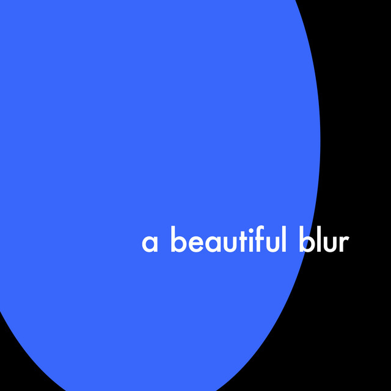
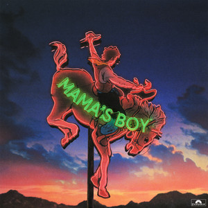
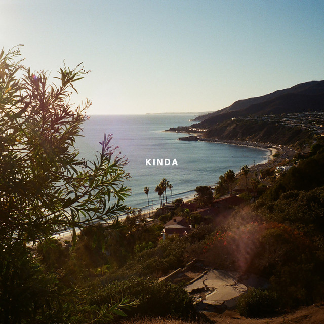

Cause You Have To
"Do you only love me ' cause you have to?"
XXL
"Backseat secrets we won't ever tell, I miss you double XL"
Out Of My League
"She's out of my league in every single way"
Alonica
"I feel most at home when I'm back in Alonica"

You!
"You, I'm nothing without you"
Sad
"Cause I know that I will never get you back"
Anything 4 U
"I'll do anything for you"
If This Is The Last Time
"I don't wanna cry, I'm bad at goodbye , If this is the last time"

Dna
"Oh, it's just not in my DNA, To love you only halfway"
Live It Down
"Be the first to let you live it down"
Ex I Never Had
"Would you please stop actin' like the ex I never had?"
Get Away
"Damn, how could anybody let you get away, get away? I won't let you get away"

Pink Skies
"That it's better, you and I, under pink skies"
Current Location
"I need my current location, To be your current location"
Yes, Babe, No Way
"Everything was better when, You would call and I'd be like "yea, babe""
Like You Lots
"And I'm thinking we should make out if you want me still"